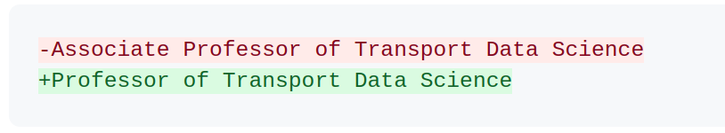

The Pathway to Professorship
I am delighted to announce that I have been appointed to a Professorship at the University of Leeds. A small change in my job title (just removing the first word of my previous job title “Associate Professor of Transport Data Science” as shown in the ‘diff’ below) means a lot for my career.

This post is a reflection on the path that got me here, provides some insight into the promotion system in the UK, outlines some of the work that I’m most proud of, and provides a chance to say thank you to the many people who have inspired and supported me along the way.
My career path
I didn’t set out to work in academia and certainly didn’t plan to become a professor. Although my career has been mostly in higher education, I think it is a little unusual in the way I’ve got there, with a big focus on impact and practical skills, rather than research outputs, administrative roles and memberships of committees and boards. As outlined in snippets from the evidence submitted to the promotion panel below, a large part of my career has been spent working on projects that have had a direct impact on policy and practice (indeed, one of the questions from the panel was whether there’s a risk that my work becomes too much like consultancy). Before going into that, here’s a brief overview of my career to date in chronological order:
- 1990-2002: Attended Weobley High School and Weobley Primary, state schools near where I grew up in Herefordshire
- 2002-2004: Attended Hereford Sixth Form College, studying A-levels in Maths, Geography, Psychology, and AS levels in Physical Education and English Language and Literature
- 2004-2008: Studied Geography at the University of Bristol’s School of Geographical Sciences, where you were allowed to do combined physical and human geography, something at the time called Environmental Geography, an option that is sadly no longer available at the University of Bristol but which is happily available in a number of other UK and international universities (source: Google Searches with the text strings
"environmental geography" site:ac.ukand"environmental geography" university course) - 2008-2009: Won a scholarship to study Environmental Science and Management at the University of York (an excellent course that I would recommend to anyone interested in the environment and sustainability, I’m glad to see that it’s still going strong according to the website)
- 2009-2013: 4 year combined masters and PhD studentship as part of the EPSRC-funded E-Futures Doctoral Training Centre at the University of Sheffield, where my supervisors Dimitris Ballas, Matt Watson, and Stephen Beck provided the skills across a range of disciplines (economics, microsimulation, policy engagement and engineering) that have been the foundation of my career
- 2013-2014: My first job, an 18 month contract working on the National Centre for Research Methods (NCRM) funded TALISMAN project on geospatial data analysis and simulation project (huge credit to Mark Birkin who gave me my first job in academia and who encouraged me to pursue my own research interests)
- 2014-2016: Research fellow in Data Analytics (University of Leeds, Leeds Institute for Data Analytics), where I got stuck into data science and started to take computer science and programming seriously, leading to the book I co-authored with Colin Gillespie, Efficient R Programming
- 2016-2019: University Academic Fellow in Transport and Big Data, at the Leeds Institute for Transport Studies (ITS), where I worked on a range of projects including the Propensity to Cycle Tool, and where I’m still based
- 2019-2024: Associate Professor of Transport Data Science at the University of Leeds (part time since 2023)
- 2023-2024: Working part time in 2 year contract for the Civil Service as Director of Data & Analysis, Head of Data and Digital and Lead Data Scientist at the new government agency Active Travel England (ATE)
- 2024 onwards: Professor of Transport Data Science at the University of Leeds
What a journey!
The promotion process and portfolio
In the UK higher education system, promotions take place through a formal process and, as in many jobs, based on a set of criteria. As outlined on the University of Leeds’ Human Resources website, there are three pathways you can take, which encourages diversity in the types of professors that are appointed (although there is still a long way to go in terms of diversity on every dimension):
- Student Education
- Research & Innovation
- Academic Leadership
As someone focussed on research and innovation, I applied for promotion through the Research & Innovation pathway, the guidance notes of which can be found here: Grade 10 Research & Innovation guidance notes. 18 criteria are listed, with 9 in each of the categories of Research and Innovation part A (RIA1 to RIA9) and Research and Innovation part B (RIB1 to RIB9). You have to provide evidence for all 9 of the RIA criteria and 3 of the RIB criteria, with a maximum word limit of 5000 words overall. You also need to submit a publication list and a CV. An important aspect of the promotion process for a professorship is endorsement from experts in the field and I am very grateful to people who know my work and who were willing to provide statements.
The panel session itself was less stressful than I expected. I had braced myself for a grilling, in between a PhD viva and a job interview, but it was more of a conversation. The people on the panel asked very good questions about my application and my future plans, and the process generated ideas that I would like to take forward, including the broad aim of “providing data science to the masses” as one of the panel members put it.
I share some of the portfolio that I’m proud of and which may be of use/interest to others below, starting with key publications and the reasons why they are important (this was a great opportunity to reflect on my favourite papers and the impact they have had, hence sharing here).
Key publications
Following in the footsteps of my colleague Kate Pangbourne, I provided a short description of each of 10 publications I could select for the submission, with the following intro (following the perhaps problematic ideas of ‘publish or perish’ and that papers are the ‘universal currency’ of academia):
I have more than 60 academic publications, including peer-reviewed papers in high-ranking journals, externally funded high-impact reports, and four books. My work is highly cited, attracting 2,450 citations (1985 since 2019), according to Google Scholar, with a strong upward trend and a H-index of 27 (25 since 2019) and an i10 index of 50 (45 since 2019). I have a strong record leading publications: I led all 10 of the publications below.
- Lovelace, Robin, M Birkin, Joseph Talbot, and Malcolm Morgan. ‘Cycle Network Policy, Planning and Investment Transformed by the Propensity to Cycle Tool’. Research Excellence Framework. University of Leeds, 2023. https://results2021.ref.ac.uk/impact/847d1191-7f25-46ba-a399-b481125edc8f?page=1.
I led this REF Impact Case Study, from its inception and framing through to the details of which quotes to include. The case study documents the impact of work I have led on strategic cycle network planning, making millions of pounds worth of public money invested more effectively as part of the government’s Cycling and Walking Investment Strategy, part of the Infrastructure Act. It was a key component of the joint ITS and School of Geography submission and was rated as a Four-star level of impact, meaning world-leading in terms of originality, significance, and rigour (Lee Brown, leader of the submission, personal communication).
- Lovelace, Robin, Anna Goodman, Rachel Aldred, Nikolai Berkoff, Ali Abbas, and James Woodcock. ‘The Propensity to Cycle Tool: An Open Source Online System for Sustainable Transport Planning’. Journal of Transport and Land Use 10, no. 1 (1 January 2017). https://doi.org/10.5198/jtlu.2016.862. Cited by 167
In this paper I articulate the need for a new approach to Planning Support Systems (PSS), building on previous literature, and proceed to outline a new approach based on open access origin-destination data and new web technologies allowing more participation in the transport planning process. The paper has had a major impact on transport planning internationally and has been used to support investment in better evidence for active travel planning, including in follow-on funding for projects in New Zealand, Scotland, the Republic of Ireland, and Portugal.
- Lovelace, Robin, Jakub Nowosad, and Jannes Muenchow. Geocomputation with R. CRC Press, 2019. Cited by 204
Geocomputation with R is a seminal contribution at the intersection of the disciplines of data science, geographic information science and, in the popular Transportation chapter, transport planning. The book has been described as a “must-read if you’re into data analytics/science” in a review on Amazon (where the book is rated 5 stars with 19 reviews), “Mandatory reading for my Geoinformatics for Planning course at School of Planning and Architecture, Delhi” by Balamurugan Soundararaj, and “comprehensive and readable” by Professor Chris Brunsdon. The book is part of 11 university courses, including the modules Reproducible and Collaborative Data Science, led by Carl Boettiger, Berkeley University of California, Analysing spatial data, led by Professor Roger Bivand, Norwegian School of Economics, and Spatial Methods in Community Research, led by Professor Noli Brazil, University of California. The book has also formed the basis of income-generating knowledge exchange activities and teaching (notably as part of the Transport Data Science module) in the University of Leeds.
- Lovelace, Robin, Mark Birkin, Philip Cross, and Martin Clarke. ‘From Big Noise to Big Data: Toward the Verification of Large Data Sets for Understanding Regional Retail Flows’. Geographical Analysis 48, no. 1 (1 January 2016): 59–81. https://doi.org/10.1111/gean.12081. Cited by 94
In this paper I outline the importance of model/observation inter-comparisons for modern data science applied to mobility datasets, with a focus on origin-destination data. The approach has played a key role in subsequent research. For example, Professor Martin Trépanier and colleagues, in a 2022 paper in the high-ranking journal Transportation Research Part A, cited the paper to explain their focus on dataset cross-validation when analysing large travel survey datasets.
- Lovelace, Robin, and Richard Ellison. ‘Stplanr: A Package for Transport Planning’. The R Journal 10, no. 2 (2018): 7–23. https://doi.org/10.32614/RJ-2018-053. Cited by 55
This paper outlines the design and implementation of the stplanr software, an R package which has been downloaded more than 153k times and used to support more than a dozen papers, which may not have been possible without the package. The methods implemented in the package enabled the modelling of national transport network datasets and estimation of traffic volumes down to the street level in multiple high-impact projects. An example of the international impacts of the research is its use to support a study of TB patients and accessibility to TB treatment initiation clinics, as outlined in a post in the rOpenSci open science discussion forum and 2021 paper “Clinical, health systems and neighbourhood determinants of tuberculosis case fatality in urban Blantyre, Malawi”, published in the high-ranking (IF: 4.2) journal Epidemiology & Infection.
- Lovelace, Robin. ‘Open Source Tools for Geographic Analysis in Transport Planning’. Journal of Geographical Systems, 16 January 2021. https://doi.org/10.1007/s10109-020-00342-2. Cited by 61
In this invited contribution I set out the ethical, intellectual and practical rationale for making transport modelling tools more open, reproducible and participatory. The paper has been cited by numerous subsequent papers, including in a recent review in the high-ranking journal Computers Environment and Urban Systems that summarises the paper’s findings, stating that “the review by Lovelace (2021) explores the current landscape of open source software and conclude that open source solutions can fulfill the professional needs of modern day transport planners” and echos these findings in the conclusions, supporting and amplifying the impact of the paper.
- Lovelace, Robin, John Parkin, and Tom Cohen. ‘Open Access Transport Models: A Leverage Point in Sustainable Transport Planning’. Transport Policy 97 (1 October 2020): 47–54. https://doi.org/10.1016/j.tranpol.2020.06.015. Cited by 40
In this paper co-authored by John Parkin (Professor of Transport Engineering, University of West of England) and Tom Cohen (Senior Lecturer in Transport Planning and Management at the University of Westminster) I set-out to go beyond the concept of ‘open source’ in transport planning and articulate the concept of ‘open access transport models’, meaning tools that are not only open and conducive to reproducible research, but also accessible to the public. The paper has had a substantial impact, being mentioned in discussion panels coordinated by eminent transport modelling professional Tom Van Vuren MBE and forming a basis of an opinion piece in the industry publication TransportXtra.
- Lovelace, Robin, Joseph Talbot, Malcolm Morgan, and Martin Lucas-Smith. ‘Methods to Prioritise Pop-up Active Transport Infrastructure’. Transport Findings, 8 July 2020, 13421. https://doi.org/10.32866/001c.13421. Cited by 29
This short paper demonstrates the cross-transferability and agility of the reproducible data science approach to transport planning advocated throughout my work. It does so by applying the approach to the urgent need to generate new evidence to support the sudden shift in government transport policy during the period of physical distancing measures during the most critical year of the COVID-19 pandemic response, with much of the work done while health professionals were in crisis response mode in the spring of 2020. The paper led to a DfT contract to develop a tool to support local authorities to rapidly develop new cycle lanes and low traffic neighbourhoods, as part of the first round of Emergency Active Travel Funding (EATF), which subsequently became the Active Travel Fund, rounds 2 to 4, which I have continued to work on in my Civil Service job for Active Travel England.
- Lovelace, Robin, Martijn Tennekes, and Dustin Carlino. ‘ClockBoard: A Zoning System for Urban Analysis’. Journal of Spatial Information Science, no. 24 (20 June 2022): 63–85. https://doi.org/10.5311/JOSIS.2022.24.172. Cited by 10
This paper demonstrates my ability not only to use established methods but also to create new methods and contribute fundamental new ideas and algorithms that can be used in a wide range of fields. Although the paper was written for transport planning applications (we used it to support the high-impact ActDev project), it is relevant in the fields of Urban Analytics (contributing to research-led teaching in the Transport Data Science module, which is part of the Urban Data Science and Analytics MSc programme of which the module is a part), Development Planning and Urban Geography. Although a recent publication, it has been cited in numerous follow-on papers and was quoted at length in a paper in the journal Journal of Environmental Policy & Planning (Impact Factor 3.2), highlighting the importance and interdisciplinary cross-transferability new methods for zone generation outlined in the paper. The paper is also a good example of my ability to collaborate across national and disciplinary lines, with co-authors Dustin Carlino (an ex Google American software engineer currently working at the Alan Turing Institute) and Martijn Tennekes (a senior civil servant in the Dutch statistical agency) providing vital input into the implementation in open source software for others to benefit from the methods.
- Lovelace, Robin, Roger Beecham, Eva Heinen, Eugeni Vidal Tortosa, Yuanxuan Yang, Chris Slade, and Antonia Roberts. ‘Is the London Cycle Hire Scheme Becoming More Inclusive? An Evaluation of the Shifting Spatial Distribution of Uptake Based on 70 Million Trips’. Transportation Research Part A: Policy and Practice 140 (1 October 2020): 1–15. https://doi.org/10.1016/j.tra.2020.07.017. Cited by 20
I include this paper because it demonstrates the power of new data science techniques to generate evidence for transport planning and address pressing policy questions. Building on previous findings and controversies, the paper sets out to explore the extent to which bike share schemes can be used by less privileged groups, with reference to a large dataset from Transport for London. The findings, made possible by new techniques which I have helped to develop, provide an important contribution to the debate and clearly support the view that investment in bike share schemes, and investment in active travel more broadly, can support social equity objectives. The paper is also a good example of my ability to bring together a wide range of people including practitioners and multi-disciplinary academic research teams to deliver high-impact research, with co-authors from the bike share industry (Smoove), academia and the third sector (the shared mobility not-for-profit Co-Mo).
Portfolio
The portfolio was long and detailed. Some of the key bits from it are below:
My input into the overall strategic direction of transport planning and modelling disciplines is exemplified by two recent articles in transport practitioner-focused magazines. I was interviewed for the Chartered Institution of Highways & Transportation (CIHT) on new methods in Transport Planning for their Transportation Professional magazine, leading to an article in their magazine. As outlined in RIA9 I was also interviewed in the practitioner-focused magazine TransportXtra in May 2024.
In terms of aligning with the University of Leeds’ strategies, I wrote:
My work has a strong ethical direction that aligns well with the University of Leeds’ strategies, especially its climate action strategy. As outlined in the Climate Plan, “we shall increasingly reorient our research and teaching away from the fossil fuel sector”. A question that is not asked (or answered) is “what will we orient towards, in place of the fossil fuel sector and associated energy intensive sectors?” My research agenda can help answer this question, with a solutions-focused approach that has tangible real-world impacts and potential for much greater future impacts, especially if I am supported to develop my team and apply for international funding bids.
Regarding ‘translational’ activity I wrote:
Most of my research has been funded by industry, governments, and transnational organisations, highlighting the high social, policy, and economic value of my work. National transport planning bodies including the Department for Transport (DfT), Transport Scotland (TS) and Transport Infrastructure Ireland (TII) have all funded tools which are now used in production by 50k+ people each year … as described in a successful REF Impact Case Study that I led for ITS in collaboration with staff in the School of Geography.
Regarding teaching, I referred to the Transport Data Science course that I coordinate, writing:
I have a sustained record of accomplishment leading outstanding research-led and innovative teaching, as illustrated by my ongoing leadership of the Transport Data Science (TRAN5340M) module from 2019 to present.
I also highlighted my international research projects and links, with reference to a recent keynote speech that I delivered at the Mobile Tartu conference where I gave a talk on Future-Proof Transport Planning (photo from that keynote shown above). International research has been a growing focus of my work, as highlighted in the quote from ITS’s head of school on my promotion:
After completing his PhD in transport and energy use, Robin joined the University of Leeds in 2013 working on new methods for adding value to large geographic datasets and then ITS in 2016 as a University Academic Fellow in Transport and Big Data. He instigated and led the development of the Propensity to Cycle Tool (publicly available at www.pct.bike), which has transformed strategic cycle network planning in England was the subject of a REF Impact Case Study. Robin’s work has led to open tools for more evidence-based decision-making overseas, including in the Republic of Ireland (with results publicly available at CRUSE.bike), the Greater Lisbon area (with results hosted on the website of the regional planning body at tmlmobilidade.pt) and in an ongoing project funded by Transport Scotland (resulting in an open access web application hosted at www.npt.scot).
Reflections on incentives, inspiration and future plans
An article in the Guardian titled “Work in an academic-professional hybrid role? Say goodbye to career progression” argues that it’s hard to progress if you undertake both professional and academic roles. Although the article is talking about taking on dual roles within the same institution, it applies to academics like me who have taken a step outside higher education. I agree with the article’s take that academic career progression is generally rather narrowly focussed, and that there is “a need in universities for a band of staff who bridge the two much larger groups”.
Unlike the author of the Guardian article, I have not found dual roles to be a barrier to progression, and this has been supported by the Research Excellence Framework (REF) process, a key feature of how UK research is evaluated. Despite issues with the REF, it clearly does incentivise people who are focussed on delivering outputs that go beyond papers and citations, with a blog post by Jon Collett at the London School of Economics showing that top case study submissions such as the one outlined above can lead to substantial rewards. REF also provides a chance for people to talk about how their work has be used in the real world during the promotion process, which is a good thing (my biggest issue with the process is that it’s so time consuming for academics submitting them and feels a bit like ‘marking your own homework’, could REF shift to a process in which an independent body not affiliated with any university plays a greater role, I wonder). I’m not sure what promotion criteria are like in other universities, but I do think that having pathways for academics interested in “translational” research, or research that has a direct impact on policy and practice, is important.
However, like many others, I have found having 2 jobs to be a challenge at times, while also being highly rewarding. It’s clearly a good thing when academics get out of their comfort zones and step into the ‘real world’, whether that’s in government, industry, or the third sector. However, it seems that there are disincentives to doing so: most jobs have a ‘baseline level’ of work that needs to be done, and if you take on a second job, you have to do two lots of baseline work.
One issue with academic reward systems, I think, is that they can tend to promote people who are confident and who ‘shout loud’ rather than the quiet, thoughtful types who might be doing the most important work. I was surprised at the extent to which it’s up to the promotion candidate (me in this case but because anyone can in theory be promoted at any time it can mean everyone) to ask about or (less honourably) even lobby for promotion. In fact, it was only the encouragement of colleagues and friends that led me to apply for promotion in the first place. So my message to people who know they are doing great work, but who are not sure if they should apply for promotion, is to go for it, you’re worth it!
This suggests that programmes like the UKRI policy fellowship scheme, which I benefited from and which led to my job in Active Travel England, are a good thing. It also suggests that employers should be flexible and should maybe even incentivise staff to take on secondments and other roles outside their main job. In many ways academia is the dream career path and, more than other careers, it can be seen as more of a vocation than a ‘normal’ job. There are of course downsides but these are hugely offset by the upsides. So I’m very happy to be moving back to being a full time academic next year and look forward to taking my work in higher education to the next level in 2025!
All careers have their pros and cons and I think academia is unique in the level of flexibility and autonomy it offers, especially when you get to the lofty heights of a professorship. Each time I have had my doubts about the academic career path, I have been inspired by others who are using their positions to make a difference. I am inspired by people like Edzer Pebesma, Megan Ryerson, John Parkin, Rachel Aldred, Anna Goodman, Antonion Paez, Lake Sagaris, Michael Szell, McEwen Khundi, Geoff Boeing, Alex Singleton, and amazing colleagues and students at the University of Leeds, including Greg Marsden, Kate Pangbourne, James Tate, and Jillian Anable. Thanks to you and everyone who using their academic positions and roles to support positive changes within and beyond academia in a variety of ways. In turn, I hope that some of my work will inspire others.
I’m also inspired by my amazing partner Katy, family and friends: home and happiness are foundations on which many good things can build.
I’m still processing what it means to have reached the top of the academic career ladder (in terms of the UK grading system at least, there is a long way to go in terms of the work!), but am committed to continuing to learn from others, sharing (including through this blog and through the amazing open source software community), and focussing on projects that are likely to have a positive impact as I go.
I do have more specific plans for high-impact projects, but will save that for another day.